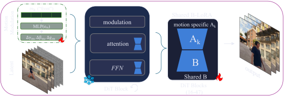

Given an input video and a camera motion label, such as follow or zoom on the face, our model regenerates the scene with the requested camera behavior relative to the subject, without additional conditions such as explicit trajectories, camera poses, or reference motion videos.
Controlling the camera relative to a moving subject in an existing video is challenging: behaviors such as maintaining a frontal view require the camera to adapt to the subject's changing position and orientation, making the desired trajectory difficult to specify in advance. Existing camera-controlled video-to-video methods typically rely on explicit trajectories or reference motions, which do not directly express these dynamic camera–subject relationships.
We introduce semantic camera motion control, a video-to-video task in which a reference video and a target motion label specify the desired subject-relative camera behavior without an explicit target trajectory. Our method learns to realize this behavior while preserving source content. It combines shared-basis low-rank adaptation with motion-conditioned modulation, while a background-consistency loss encourages fidelity in regions visible in both reference and target videos.
We construct 661 paired videos covering eight semantic camera behaviors and evaluate on a separate 109-scene benchmark using subject-relative motion metrics, appearance measures, and a user study. Our method achieves a semantic-motion success rate of 68.6%, compared with 45.3% for Vista4D, the strongest evaluated baseline, while maintaining comparable subject identity preservation.
The reference video is encoded into tokens that are concatenated with the noisy target tokens of a pretrained video diffusion transformer. The motion label selects how the camera should behave relative to the subject.

All motions share one low-rank basis B, which learns from every training pair. A motion-specific adapter keeps each camera behavior distinct.
A learned embedding of the motion label predicts scale, shift and gate offsets for the transformer blocks, which helps disentangle the motion signals during training.
An auxiliary loss keeps regions visible in both the reference and the target video consistent, so the scene stays faithful when the camera moves.
Input, ours (blue) and four baselines for each motion. As the motion condition, trajectory-conditioned baselines receive a canonical trajectory for the motion, CamCloneMaster receives a reference video that shows the motion, and ours receives only the motion label.
Because all motions share one low-rank basis, two motion factors can be mixed at inference time. This produces a composite camera behavior that was never trained.